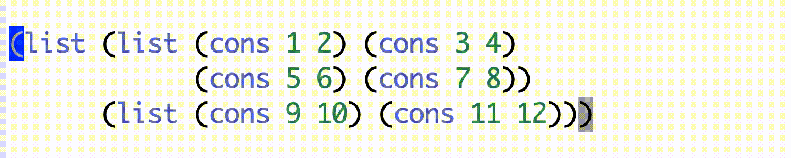
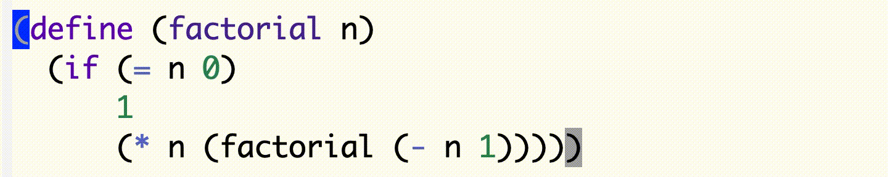
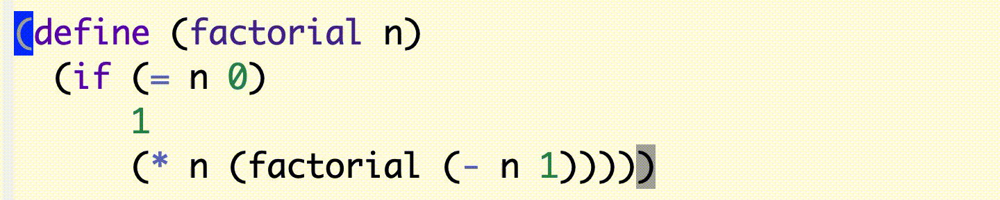

5. 高階手続きによる抽象 再訪
はじめに
前回に引き続き1.3節の高階手続きの演習を行います．今回は1.3.4節の問題です．
トピックス
これまでは，Emacs の各種機能のうち，どんなプログラミング言語でコードを書く場合であっても有用な機能を中心に紹介してきました．今回は，Scheme（Lisp）言語（より正確には括弧を多用する言語）を効率良く編集する操作について紹介します．これを覚えると，Scheme コードの編集作業が非常に捗りますので，ぜひマスターして以降の演習で活用してください．
式単位の編集
これまでのトピックスで出てきた Emacs の様々な操作では，1文字や1行を編集対象の単位として扱っています．たとえば，C-f はカーソルを1文字分だけ前方に動かす操作ですし，C-k は1行分正確にはカーソルの現在位置から行の末尾まで．を切り取る操作です．
こう書くと，「そんなの当たり前じゃないか，それ以外にどんな方法があるんだ」という声が聞こえてきそうです．しかし，一般的なプログラミング言語のコードでは，その一部分を区切る単位として，文字や行のようなバッファ（ファイル）中の表面的な配置とは別に，それらと直接関係のない論理的単位を用いることが可能です自然言語の文法にも「単語」「文節」等々，論理的な単位があります．．Scheme 言語のコードにおける論理的単位は，これまでずっと扱ってきている式（expression）です．
これまで見てきたとおり，Scheme（Lisp）の式は，括弧によってその構造が明確であることが大き特徴です．これは，C 言語 や Java 言語で書かれたコードとは対照的です．たとえば，
(+ (* 1 2)
(/ (- 3 4)
5))という Scheme の算術式を，これらの言語ではScheme の例に合わせて改行を入れているので，若干不自然です．：
1 * 2
+ (3 - 4)
/ 5のように，優先順位を変えるために必要な箇所以外に括弧をつけることを強制はしません．また，関数定義が論理的単位であるにも関わらず，関数定義全体を：
{
int main() {
printf("Hello, world.\n");
}
}のように括弧で括ったりもしません．
一方，Scheme を含め Lisp 系言語ではあらゆる論理的単位を必ず括弧で括ります．そのせいで，「括弧が多すぎて Lisp で書かれたプログラムは読みにくい」と揶揄されることがありますし，それを否定も出来ません．しかし，Emacs のような Lisp フレンドリーなエディタでは，必ず括弧がついていることを最大限に活用することで，Lisp コードの論理的単位での編集作業をぐっと簡単にしています．
Scheme コードの編集作業において，行単位で編集することによる生じる問題点の一例を，簡単なコードを使って説明します．次の手続き定義を編集中だとします．
(define (factorial n)
(if (= n 0)
1
(* n (factorial (- n 1)))))仮に本体式の (* n (factorial (- n 1))) を削除したいとしましょう間違ってないのでその必要はないのですが...．ここで4行目に対し，C-k を使ってこの行全体の削除を行うと，
(define (factorial n)
(if (= n 0)
1となり，本体中にある部分式だけを消したかったのに，if 式の終わりを表す閉じ括弧と define 式の終わりを表す閉じ括弧まで一緒に消してしまうことになります．
「1行消した後で閉じ括弧を2つ足せばいいじゃないか」と思うかも知れません．この例のような簡単な場合であればそのとおりです．しかし，もっと複雑なコードを編集するような場合には，「今，余分に〇個の括弧を消した」とか「後からここに〇個の括弧を足さないと対応がつかない」のような面倒くさい事を，コードを編集している人間の頭の中でいちいち数え，そして記憶しておく必要があります．もしかしたら，編集作業の最中に LINE やメールが届いて中断し，再開した時にはすっかり忘れてしまっているということも十分にあり得ます．
このような問題は，編集中のコードをそもそも括弧の対応がつかないようなアンバランスな状態にはしないよう常に気を配りながら編集すれば避けることができますEmacs には閉じ括弧を入力したり，開き括弧の直前・閉じ括弧の直後にカーソルを持っていくと対応する括弧が強調表示されるといった機能があり，これから紹介する編集操作を知らなくても，括弧の対応を保つのは比較的楽です．それでも，この例のように誤って括弧の対応を完全に無視した編集作業を行うことは十分にあり得ます．．そのような編集方法の一つに，前々回に紹介した領域選択があります．C-SPC と C-w を組み合わせることで，次のように必要な範囲だけを削除できます．
しかし，このように自分でどの閉じ括弧までかを確認しながら領域を選択するのは面倒ですし，間違いのもとです最後の閉じ括弧のあたりでモタついてるのが分かるでしょうか😅．
以上，前置きが長くなりましたが，文字単位や行単位の編集の不便さが少しは伝わったのではないかと思います．それでは，その不便さを解消する便利な式単位の編集操作について順に見ていきましょう．
まず，これまでに出てきた文字単位や行単位での編集操作（の一部）の一覧です．
| キー | 意味 |
|---|---|
C-f | カーソルを右（forward）へ1文字分だけ移動 |
C-b | カーソルを左（backward）へ1文字分だけ移動 |
C-n | カーソルを下（next）へ1行分だけ移動 |
C-p | カーソルを上（previous）へ1行分だけ移動 |
C-a | カーソルを現在行の先頭へ移動 |
C-e | カーソルを現在行の末尾へ移動 |
C-SPC | カーソル位置にマークを設定 |
C-k | 行末尾までの切り取り |
これらのキーバインディングに対し，さらに「M-」（Meta キーの同時押し）を追加つまり，C-M-<key> はCtrl キーと Meta キーと <key> キーの3つを同時に押すことになります．すると，それぞれ式単位の編集へと変わります．それぞれの操作が式単位になった場合の，正確な意味は以下のとおりです．なお，トップレベル式とは，一番外側にある（つまり，別の手続き定義や変数定義の内部に書かれているのではない）式のことです．
| キー | 意味 |
|---|---|
C-M-f | カーソルを右（forward）へ式1つ分だけ移動 |
C-M-b | カーソルを左（backward）へ式1つ分だけ移動 |
C-M-a | カーソルを現在のトップレベル式の先頭へ移動 |
C-M-e | カーソルを現在のトップレベル式の末尾へ移動 |
C-M-k | カーソル位置の直後の式全体を切り取り |
C-M-SPC | カーソル位置の直後の式全体を領域選択 |
簡単な Scheme コードで実際に試してみればすぐに理解できると思いますが，操作例の動画を以下に載せておきます．
strong{C-M-f，C-M-b}
 C-M-f と C-M-b で式単位で行ったり来たりできます．動画の前半では外側のリストの2つの要素の間を，後半では内側のリストの4つの要素の間を行ったり来たりしています．
カーソルの直後に部分式の始まり（開き括弧）がある位置にだけジャンプしていることに注意してください．常にそのような場所にカーソルを置いておけるため，次の C-M-k や C-M-SPC と組み合わせると便利です．
C-M-k
 見てのとおり，対応する閉じ括弧を自分で探さなくても済みます．なお，切り取った文字列を貼り付けるのは通常の C-y です．
C-M-SPC
C-M-SPC を連続して複数回押すことで，直後の式，その次の式，さらにその次の式，．．．と選択範囲を広げていくことが可能です．
 この動画だと，C-M-SPC を3回連続で押すことで
if式の3つの部分式を選択し，次に C-w を押すことでまとめて切り取っています．当然ながら，C-M-SPC を1回押してから C-w を押すのと，C-M-k は同じ意味になります．
{kind=link}
{kind=link}
{kind=link}
上記の表に加えて，コードの自動インデントにも式単位バージョンがあります．racket モードでは，TAB キーを押すと行単位で正しい位置になるようインデントを自動で追加してくれますがこれまでちゃんと説明してなかったかも...まあ気づいてましたよね．，これについても，C-M-q を押すと直後の式全体を自動インデントしてくれます．関数定義を一発できちんとインデントしてくれたりするので，地味な機能ですがすごく便利です．
また，Emacs の編集操作ではありませんが，Racket 言語にはコメントにも式単位の書き方が用意されています．テキストで説明されているとおり，Scheme 言語ではコード中に「;」を書くと，そこから行末までがコメントアウトされます．Racket ではそれに加えて，コード中に「#;」を書くと，直後の式全体がコメントアウトされます．Emacs ではコメントアウトされた範囲の文字色が変わるので，試してみればどういうことかすぐに分かると思います．
Racket にはまた，C言語の「/* ... */」のような複数行コメントに対応する「#| ... |#」という書き方も用意されていますが，「#;」ほど便利ではないので私はあまり使いません．．
今週の課題
今回は，
解いた課題の★の数の合計が3個以上
であることを最低条件とします．もちろん，それに縛られず一つでも多くの課題にチャレンジしてください．
- 解いた課題の★の数の合計：3個以上
- 提出期限：5/18(水) 19:00
- zip に圧縮するディレクトリ名：ex05
- 提出する zip ファイル名：ex05.zip
課題5.1 [★] [テキスト中の問題文へのリンク]
リンク先の問題1.40を解きなさい．配布ファイル ex05/ex05-1.rkt に解答コードを書き加えて完成させること．
手続き (cubic a b c) を定義しなさい．
課題5.2 [★] [テキスト中の問題文へのリンク]
リンク先の問題1.41を解きなさい．配布ファイル ex05/ex05-2.rkt に解答コードを書き加えて完成させること．
手続き (double f) を定義しなさい．
課題5.3 [★] [テキスト中の問題文へのリンク]
リンク先の問題1.42を解きなさい．配布ファイル ex05/ex05-3.rkt に解答コードを書き加えて完成させること．
手続き (compose f g) を定義しなさい．
課題5.4 [★★] [テキスト中の問題文へのリンク]
リンク先の問題1.43を解きなさい．配布ファイル ex05/ex05-4.rkt に解答コードを書き加えて完成させること．
手続き (repeated f n) を定義しなさい．
このファイル先頭の (require "ex05-3.rkt") と，ファイル ex05-3.rkt 中の (provide compose) によって，ex05-3.rkt 中に定義されている (compose f g) をこのファイルから呼び出すことができる．
課題5.5 [★★★] [テキスト中の問題文へのリンク]
リンク先の問題1.44を解きなさい．配布ファイル ex05/ex05-5.rkt に解答コードを書き加えて完成させること．
手続き (smooth f) を定義しなさい．微小な値 dx には，必ず以下の定義を用いること．
(define dx 0.00001)さらに，smooth と課題5.4 (テキスト問題1.43)の repeated を使い，n重平滑化関数 (n-fold-smooth f n) を定義しなさい．
このファイル先頭の (require "ex05-4.rkt") と，ファイル ex05-4.rkt 中の(provide repeated) によって，ex05-4.rkt 中に定義されている(repeated f n) をこのファイルから呼び出すことができる．
課題5.6 [★★★] [テキスト中の問題文へのリンク]
リンク先の問題1.45を解きなさい．配布ファイル ex05/ex05-6.rkt に解答コードを書き加えて完成させること．
問題文の説明に従って x の n 乗根を求める手続き (nth-root n x) を定義しなさい．
このファイル先頭の (require "ex05-4.rkt") と，ファイル ex05-4.rkt 中の (provide repeated) によって，ex05-4.rkt 中に定義されている (repeated f n) をこのファイルから呼び出すことができる．
課題5.7 [★★★] [テキスト中の問題文へのリンク]
リンク先の問題1.46を解きなさい．配布ファイル ex05/ex05-7.rkt に解答コードを書き加えて完成させること．
手続き (iterative-improve good-enough? improve) を定義しなさい．さらに，iterative-improve を使って，1.1.7節の (sqrt x) と1.3.3節の (fixed-point f first-guess) を定義しなさい．fixed-point が使用する tolerance には，テキストと同じ下の定義を必ず用いること．
リテラシ関連項目まとめ
利便性のため，前回までの操作方法・コマンドも全て含んでいます．今回追加された項目は太字で表しています．
Emacs
| キー | 意味 |
|---|---|
C-f | カーソルを右（forward）へ1文字分だけ移動 |
C-b | カーソルを左（backward）へ1文字分だけ移動 |
C-n | カーソルを下（next）へ1行分だけ移動 |
C-p | カーソルを上（previous）へ1行分だけ移動 |
C-v | カーソルを下へ1画面分だけ移動 |
M-v | カーソルを上へ1画面分だけ移動 |
M-< | カーソルをバッファの先頭へ移動 |
M-> | カーソルをバッファの末尾へ移動 |
C-a | カーソルを現在行の先頭へ移動 |
C-e | カーソルを現在行の末尾へ移動 |
C-x C-g | カーソルを指定行へ移動 |
C-l | カーソルのある行が画面の中央になるよう再描画 |
C-d | カーソル上の1文字を削除 |
C-h | カーソル直前の1文字を削除 |
C-SPC | カーソル位置にマークを設定 |
C-w | 選択範囲を切り取り |
M-w | 選択範囲をコピー |
C-y | キルリングの内容を貼り付け |
C-k | 行末尾までの切り取り |
C-x C-f | ファイルを開く |
C-x C-s | ファイルの保存 |
C-x C-c | Emacs を終了 |
C-x b | 表示するバッファを変更 |
C-x C-b | バッファ管理用バッファを表示 |
C-x k | バッファを閉じる |
C-g | コマンドの中断 |
C-x 2 | ウィンドウを上下に分割 |
C-x 5 | ウィンドウを左右に分割 |
C-x 1 | ウィンドウを1つにする |
C-x o | アクティブなウィンドウの切り替え |
C-s | 前向きにインクリメンタル検索 |
C-r | 後ろ向きにインクリメンタル検索 |
M-% | 文字列の置換 |
M-x eshell | シェルを起動 |
Racketモード
| キー | 意味 |
|---|---|
C-c C-k | ソースファイルを対話環境に読み込む |
C-c C-z | ソースファイルと対話環境の間のカーソル移動 |
C-M-f | カーソルを右（forward）へ式1つ分だけ移動 |
C-M-b | カーソルを左（backward）へ式1つ分だけ移動 |
C-M-a | カーソルを現在のトップレベル式の先頭へ移動 |
C-M-e | カーソルを現在のトップレベル式の末尾へ移動 |
C-M-k | カーソル位置の直後の式全体を切り取り |
C-M-SPC | カーソル位置の直後の式全体を領域選択 |
C-M-q | カーソル位置の直後の式全体を自動インデント |
シェル
| コマンド | 意味 |
|---|---|
pwd | カレントディレクトリを表示（present working directory） |
cd dir | カレントディレクトリを dir へ変更．dir を指定しない場合はホームディレクトリへ変更（change directory） |
ls dir | ディレクトリ dir の中身（dir を省略した場合はカレントディレクトリの中身）をリスト表示（list） |
cp src dst | ファイル src を dst へコピー（copy） |
cp -r src dst | ディレクトリ src 全体を dst へコピー（copy） |
mv src dst | ファイル src を dst へ移動（move） |
rm file ... | file ... を削除（remove） |
rm -r dir | ディレクトリ dir 全体を削除（remove） |
echo msg | 文字列 msg を標準出力に表示 |
mkdir dir | ディレクトリ dir を作成（make directory） |
unzip file | zip ファイル file をカレントディレクトリに展開 |
zip -r file dir | ディレクトリ dir を zip ファイル file に圧縮 |
diff old new | ファイル old と ファイル new を比較 |
grep str file ... | 文字列 str を ファイル file ... の中から検索 |
find dir -name 'file' | 名前が file にマッチするファイルをディレクトリ dir から探す |